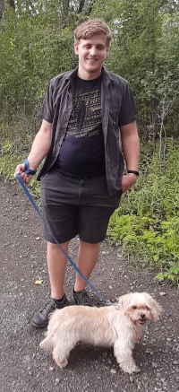

Originally, I came from a family of five, I am the oldest from my siblings and I have two sisters.
Since many years I'm with my girlfriend.
We have two wonderful dogs which cause many funny situations.

My first dog:
My oldest dog is named Miley, she was born in August 2009 and she is a Shi-Tzu.
I could describe this doggo as a calm dog who enjoy walk, treats and naps, because she is always sleeping.
The color of her fur is a mix of brown, gray and mostly white.
Interesting fact even if she's old she loves take walks.
Once she has been to the park with me and she was so trilled to be outside.
Fun fact: When she's not trimmed she looks like a mop.

My second dog:
My younger dog is named Luna, she's a puppy, born on May 2022, and she is a mix-caniche.
I would describe her as a dog who as too much energy, always want to play and bark after everything: dog, kids, squirrels, birds and even at ants.
She as mix colors of whites, gray but mostly black.
Which is funny because her and Miley are completely opposite in color and comportment.
She always wants attention and hug and that really make her lovely even though she loves to eat our shoes.
Fun fact: She even bark against empty 2 liters empty bottles.